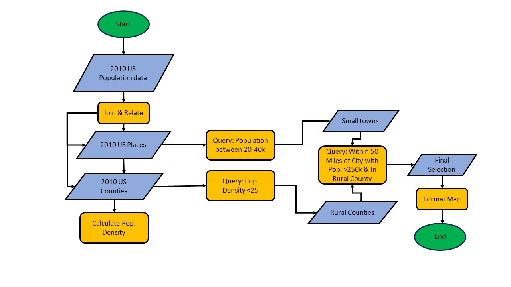
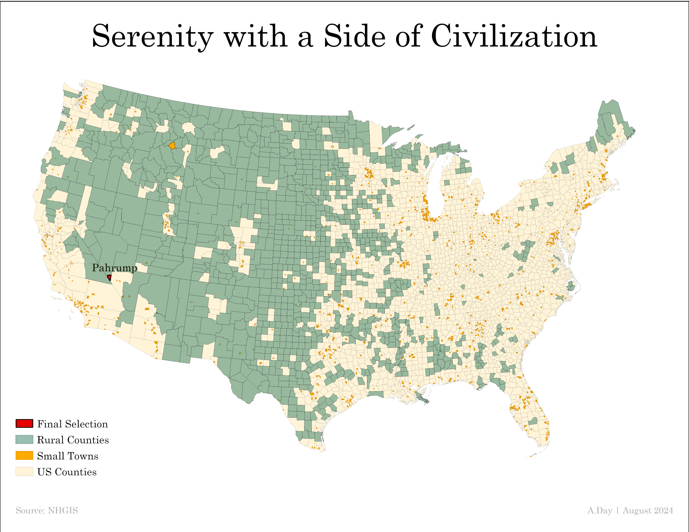

Serenity With a Side of Civilization
Adam Day | September, 2024
METHODS
In an effort to identify the ideal city which meets specified criteria involving population and relative proximity to high and low population areas, ArcGIS Pro was utilized to accomplish this task. U.S. county shapefiles and census data was obtained from the National Historical Geographical Information System (NHGIS). Map projection was set to USA Contiguous Albers Equal Area Conic. A spatial join using the ‘GISJOIN’ field allowed for an easy join between both shapefiles with the population.csv data table. Two new output feature classes were created and exported to the map (places_pop_2010.shp & county_pop_2010.shp). Next, population density was calculated for each county through the use of the ‘Calculate Geometry’ tool. Using various queries, the data from these shapefiles were filtered down based on the following criteria:
Each query result was extracted and saved to maintain project trackability. Final results identified one city meeting all previously listed criteria. A map displaying the findings was created and saved to the Final subfolder as a high-resolution JPG file with 300 dpi quality settings. The project followed a workflow as described by the image below.
Figure 1: Project Workflow Chart
RESULTS
The City of Pahrump, Nevada was identified as the only city to contain a population and proximity based on the following criteria:
Pahrump is located in Nye County, Nevada which encompasses roughly 18,200 square miles. Additionally, in 2010 the recorded population for Nye County was 43,946 citizens which boasts an average population density of approximately 2.41 citizens per square mile. Despite its relatively “rural” aspects, Nye County is located approximately 25 miles away from Las Vegas, Nevada, allowing for residents of Nye County and Pahrump City to experience both the city and rural lifestyles with relative ease.
Figure 2 below shows the outcomes of the queries involved with the criteria established to locate the ideal city. As made evident by the map, much of the available locations based on these criteria are located west of the Mississippi river extending past the Midwest and through the Rockies. While few exceptions exist such as far northeast New England and scattered areas throughout the American South, many opportunities for a rural living experience exist in the Midwest and the Rockies. With regards to high population cities, Pahrump Nevada remains the ideal candidate for its close proximity to not only Las Vegas, but many other high population cities scattered throughout the southern California region.
Figure 2: City of Pahrump